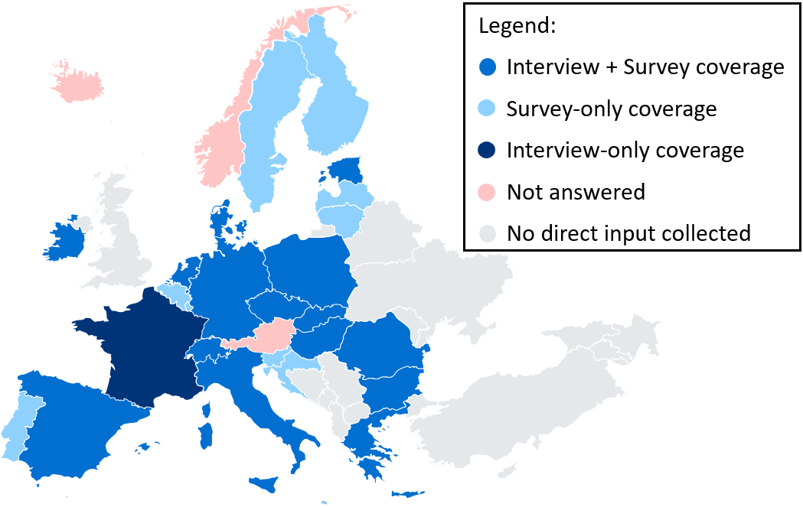

The supply–demand model
Supply-demand model
To address this question, the study developed a supply-demand model that estimates how the ATCO workforce is expected to evolve over time and compares that future workforce with the number of controllers required to accommodate projected traffic demand. The model provides a common analytical framework through which hiring, licensing, training and operational factors can be assessed consistently across the study scope and translated into a common measure of workforce imbalance.
The purpose of the model is not limited to forecasting future staffing requirements. Equally importantly, it provides a structured way of understanding why ATCO shortages emerge, how they evolve over time and which factors are likely to have the greatest influence on future controller availability. This enables the study not only to quantify potential workforce shortages, but also to assess the extent to which different operational, workforce and training measures could contribute to reducing them. The following figure illustrates the conceptual framework underpinning the model.

The model is centred on the relationship between two interconnected dimensions:
- Demand, representing the number of ATCOs required to accommodate traffic demand; and
- Supply, representing the number of ATCOs available to provide Air Traffic Services (ATS).
Both dimensions are influenced by factors arising throughout the ATCO management cycle. On the demand side, workforce requirements are shaped by operational considerations such as traffic patterns, airspace organisation, workforce deployment and the management of ratings and endorsements. On the supply side, workforce availability depends on the ability of the system to attract, recruit, train, license and retain controllers over time.
The interaction between these two dimensions determines the existence and magnitude of the ATCO gap, defined as the difference between the number of controllers required and the number available, measuring the ATCO numbers as FTEs (Full-Time Equivalent). As illustrated in Figure 7, ATCO shortages do not result from a single cause or a single stage of the lifecycle. Instead, they emerge from the combined effect of multiple factors operating across hiring, training, licensing, and operational activities.
This distinction is central to the analytical approach adopted in the study. By linking workforce challenges and potential solutions to the factors influencing either demand or supply, the model provides a consistent framework for assessing both the causes of future shortages and the potential effectiveness of different mitigation measures.
The model has been developed at ACC level, in order to allow specific local traffic, operational and workforce characteristics to be reflected within the analysis and the results to be actionable. Results are subsequently aggregated at ANSP and EU level to support the assessment of workforce trends across the SES.
Detailed specification
This annex provides the detailed technical specification of the supply-demand model developed for the study. It documents the calculation logic used to compute the two components of the ATCO gap formula: ATCO demand and ATCO supply, detailing the assumptions considered during the development of the model and including the definition of all the variables used to do so, together with the corresponding sources.
The model is developed at ACC level and subsequently aggregated to ANSP and European level. It projects annual workforce developments from the baseline year to 2036 and relies on the best available combination of harmonised European datasets and ANSP-specific information obtained through surveys and interviews. Figure 18 illustrates the geographical coverage of the study and the availability of ANSP-specific information collected through the consultation activities. Whilst responses were obtained from the majority of ANSPs within the study scope, a limited number of ANSPs did not participate in the consultation, requiring the use of publicly available information and supplementary assumptions for the parameterisation of certain model variables.

Additionally, as with any forecasting exercise, the model incorporates a number of simplifying assumptions. In particular, demand and supply are assessed on an annual basis, workforce mobility between operational units is not modelled explicitly, and the analysis focuses on workforce availability rather than the economic implications of potential interventions.
The supply-demand model is parameterised using a defined set of variables that determine the evolution of both ATCO demand and ATCO supply over the projection period.
For transparency and traceability, the following summarises the variables incorporated into the model, their definitions, degree of controllability and the principal data sources used for their parameterisation.
Table 40: Variables of the supply-demand model (Source: Consortium assessment)
| Variable | Definition | Controllability | Source |
|---|---|---|---|
| DEMAND | |||
| Flight controlled hours | The volume of Instrumental Flight Rules (IFR) traffic handled by an ACC, expressed as flight hours controlled. This variable constitutes the primary driver of demand within the model. | External or partially controllable | Historical traffic is derived from the EUROCONTROL ACE benchmarking dataset [1] at ACC level. Future traffic is projected using the EUROCONTROL STATFOR forecast [6] up to 2032 and the EUROCONTROL Aviation Outlook 2050 [7] thereafter (2033-2036), applied as growth rates to the latest observed ACC traffic levels. |
| ATCO productivity | The amount of traffic that can be managed per hour of controller operational duty, expressed as flight hours controlled per ATCO hours on duty. | Controllable | Baseline productivity is derived from the EUROCONTROL ACE benchmarking [1] dataset. Future productivity is projected using the annual growth observed over the 2012-2019 period, which is considered representative of pre-pandemic structural productivity improvements. Four productivity scenarios are modelled: baseline, low (50% of baseline growth), SESAR deployment [9] (143% of baseline growth) and Master Plan [2] (200% of baseline growth). |
| Utilisation | The proportion of available controller duty hours that is effectively dedicated to operational activities. It determines how many of the hours a controller can supply are available for operations, and therefore how many controllers a given number of controller hours requires. | Controllable | Derived from EUROCONTROL ACE [1] utilisation indicators and cross-referenced with EUROCONTROL Performance Review data [8] on ATFM delay attributed to ATC staffing and capacity constraints. The selected utilisation level corresponds to the range associated with acceptable delay performance. |
| Maximum staff hours | The maximum number of operational duty hours that a controller may provide within a year. | Controllable | Compiled for each ANSP using RP4 Performance Plans [8], applicable national legislation, collective agreements and information collected through interviews. These sources are combined to reflect the operationally applicable limit in each ANSP. |
| SUPPLY | |||
| Current ATCOs in OPS | The number of ATCOs available at the start of the projection period, forming the baseline workforce from which future supply evolves. | External or partially controllable | Derived from the EUROCONTROL ACE benchmarking [1] dataset at ACC level, using the latest available number of ATCOs in service. |
| Intake | The number of candidates entering the ATCO training pipeline each year. It determines the volume of controllers that can reach operations once training is complete. | External or partially controllable | Obtained from the survey and interview programme, through which ANSPs reported current annual recruitment volumes and planned training intakes. |
| Training duration | The duration of the training sequence from entry into the pipeline to unit endorsement, comprising initial and unit training. It determines the delay between a recruitment decision and its effect on supply. | Controllable | Obtained from survey responses and interviews. Training duration reflects the reported time required to progress from entry into the training pipeline to unit endorsement, including both initial and unit training phases. |
| Success rate | The proportion of trainees entering the training pipeline who successfully complete all training phases, obtain a unit endorsement and ultimately enter operational service. It determines the share of each intake that effectively contributes to future ATCO supply. | Controllable | Obtained from survey responses and interviews, based on the proportion of trainees reported to successfully complete the training process and obtain a unit endorsement. |
| Training capacity | The number of trainee places the system can hold in each training phase, given the instructors, simulators and operating positions available. It caps the output of the pipeline, through the phase with the lowest throughput. | Controllable | Obtained from survey responses and interviews. Capacity reflects the number of trainee places that can be supported by the available training resources, including instructors, simulators and operational training positions. |
| Retirements | Controllers leaving operations on reaching the applicable retirement age. They reduce supply, at a volume determined by the age structure of the workforce. | External or partially controllable | Workforce age profiles are derived from survey responses, while retirement ages are obtained from interviews and applicable national provisions. Both elements are combined to estimate future retirement flows. |
| Attrition | All other departures from operational duty, including resignation, movement to non-operational duties and loss of medical certification. They reduce supply, in addition to retirements. | External or partially controllable | Based on benchmark attrition rates reported in the FAA (Federal Aviation Administration) Air Traffic Controller Workforce Plan. A common attrition rate is applied across the study area in the absence of equivalent European datasets. |
Earlier outlook to 2040
Using the findings from the analysis of macro trends and the logic of the ATCO management cycle model, we created a forecasting model that translates the macro trends and assumed parameters into ATCOs in OPS numbers. The model considers the period from 2025 to 2040, using all the available data sources to refine the forecast. The following sections explain the model and its key parameters, describe the assumptions and discuss the calculation outcomes. The functional model is delivered as an annex to this report and will be updated with the latest available data (as indicated in Chapter 1).
The model starts with the European Union’s forecast population and calculates the number of potential applicants for ATCO recruitment by applying the percentage of people aged 20-35. This percentage is calculated from the age distribution forecasts for 2030, 2035 and 2040, assuming linear annual changes for the intervening years. Further demographic inputs of the model include:
- The average retirement age is 60 years.
- The average starting age is 25 years.
- The average annual rate of ATCO attrition due to medical or other reasons is initially set at 1% of the incumbent population.
The average starting and retirement ages are considered from an operational perspective (i.e. when ATCOs begin working in operations and when they retire from operational work). These figures are used to determine the average annual retirement ratio of incumbent ATCOs, assuming a perfectly even distribution of the ATCO population across all ages (i.e. as if the number of ATCOs aged 25 was the same as the number of ATCOs aged 60). This results in an average retirement rate of 2.86% (the share of 60-year-old ATCOs in the incumbent population). However, because performance plans also include data on ATCOs stopping work in operations, these figures are used to calculate retirement rates and the number of retiring ATCOs for the period from 2025 to 2035.
Study dashboard
The supply-demand model and sensitivity analysis are also available through an interactive Power BI dashboard, provided as a complement to this report. The dashboard allows users to explore the projections at ANSP and ACC level and to adjust the main model assumptions directly. Users can select different traffic and productivity scenarios and view the resulting workforce requirement and projected supply for each ANSP or control centre. This provides a more detailed view of the differences between units, which are not visible in the European-level results.
The dashboard also allows users to change the model variables and immediately see their effect on the projected ATCO gap. This makes it possible to reproduce the sensitivity analysis, test different assumptions, or combine changes to several variables. The dashboard therefore provides additional flexibility for exploring potential policy scenarios beyond those assessed in the report. Making the model available in this form also improves transparency and usability, allowing to trace the projections back to their assumptions and update or test them as conditions change.
The dashboard reflects the model and ANSP data available as of 01 September of 2026. Results at ANSP and ACC level are model projections and should be interpreted accordingly.
How to use the dashboard?
You will open the dashboard on the cover page, but then you have available: ▪ A pair of tutorials to know how to use the main pages; and ▪ Two main pages: “General scenarios” and “Dynamic scenarios”.